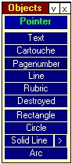
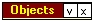
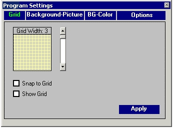
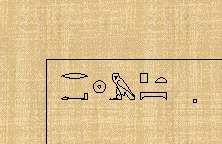
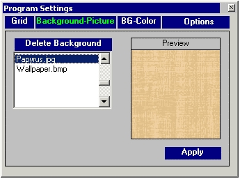
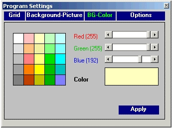
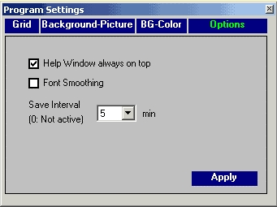
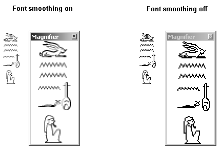

2. Program Settings
2.1. General Settings
The program settings are not set for an individual document but are valid for all documents. They are stored in the INI-File <VisualGlyph.ini>, which can be found in the application path. After closing and restarting the program, these settings will always be restored. So you will always find the program as you last left it. Two types of settings are stored:
Positioning: If the user changes the position or size of a toolbox the program stores that information in the INI-File too, and the toolboxes will reappear in exactly the same position and with the same size as when the user closed the program.

Fig.2.1
To position a toolbox click on its title (here: <Objects>). Press the left mouse button down and drag the toolbox to the desired position. There are two buttons in the top right-hand corner. The v-button serves to size the toolbox. A click on it will minimize the toolbox

Fig.2.2
Another click on this button restores its original size. The x-button closes the toolbox. Use the menu <Toolboxes> to reopen a toolbox. Alternatively, you could open this toolbox by clicking in the VisualGlyphs main window with the right mouse button.
The <Program Settings> Dialog: To call up this dialog use the menu <View/Program Settings> or the shortcut <Control-R>. You will find the dialog shown in Fig.2.3 ff. This dialog has four registers. To activate a register click on its caption which then changes its colour to green. This dialog is described in 2.2. to 2.5.
2.2. Grid
A grid helps the user to position the objects - especially the hieroglyphs - more accurately.

Fig.2.3
VisualGlyph - like many other programs - can show a grid in the writing area. To do this select the grid width with the scrollbar, click on the checkbox <Show Grid> and press the <Apply> button. If the <Snap to Grid> checkbox is activated, objects can only be positioned on the grid points only. This applies only if you use the mouse for moving the objects. It is always possible to move an object pixel-wise with the arrow keys. You can use the <Snap to Grid> function without selecting <Show Grid>.
2.3. Background-Picture
VisualGlyph can use bitmaps as a background of the writing area. In this way you can write on papyrus or the like. The background pictures are not printed.

Fig.2.4
The program installs two background pictures by default. They can be found in the folder <ApplicationPath/Background>. If you copy your own pictures to this folder they will appear in the listbox at the left hand side of Fig.2.5. VisualGlyph only accepts bitmaps (extension .bmp, .jpg etc.).

Fig.2.5
If you select a bitmap in the listbox it will be shown as a preview on the right-hand side. Click on the <Apply> button to fill the writing area with that picture. Background-pictures cover the background colour. If you want to write hieroglyphs on a background colour you must click on <Delete Background>. The preview will then show no picture. A click on the <Apply> button resets the writing area to its background colour.
#K2.4. Background-Colour

Fig.2.6
A background picture (see 2.3) covers the background colour. In order to see it you have to delete the background picture.
To select a colour, click on the colour table on the left. This colour will appear as a preview in the <Colour> rectangle to the right bottom. A click on the <Apply> button transfers this colour to the writing area.
In general colours are composed of the three basic colours red, green, blue. On computers these values run from 0 to 255. To mix your own colour use the vertical scrollbars. The values of the scrollbars are shown in brackets to the left, the color itself in the color preview. Click on <Apply> to select this color.
2.5 Options

Fig.2.7
1. Help Window always on Top
If the help window is activated (see 8.1) it will always stay on top of all other windows if this control is checked. You can set this option in the Help Window too (Menu: options).
2. Font smoothing (Font aliasing)
Font smoothing can be toggled by clicking on the checkbox <Font Smooting>. Font smoothing will round the edges of the font signs (see Fig.10.2). The effect depends on the computer hardware and may sometimes create very pale signs.

Fig.2.8
3. Save Interval
The program will save the document periodically every x minutes, where x is the interval. If 0 is selected the document is not saved automatically.